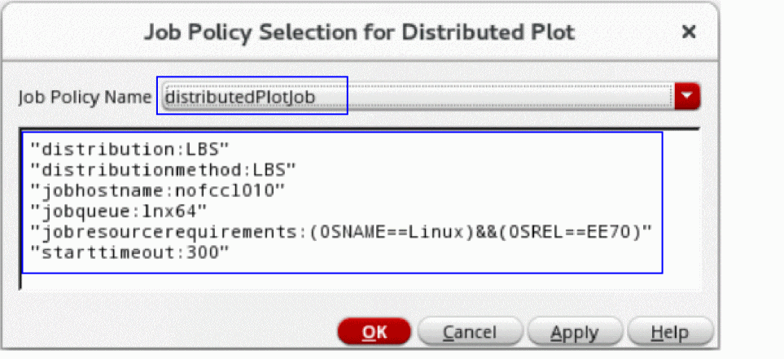

6
Distributed Plot
Distributed Plot is a standalone process that accepts plotting commands. This process is attached to the main virtuoso process.
This standalone process is useful in resource-intensive operations such as plotting large simulation datasets, and prolonged plotting operations. The Distributed Plot process can be launched either on a separate remote machine or on the same machine running the main virtuoso process.
Except for Direct Plot, Wave Compare Specs, Create Datasheet, and Checks/Asserts, Distributed Plot mode supports all plotting operations, such as Plot All, Quick Plot All, Plot Across Corners, Plot Across Design Points, Plot Outputs – Transient, Plotting Template, and Plot Outputs – Expressions.
Features that are not supported in the Distributed Plot mode use the local viva process of the main virtuoso process.
Advantages of Distributed Plot
Distributed Plot offers the following advantages:
-
Increases productivity: You can use an additional
vivaprocess in tandem with the defaultvirtuosoprocess. -
Offers scalability: You can remotely launch the plotting window in a separate machine from the one that is running the main
virtuosoprocess.
Related Topics
Enabling or Disabling Distributed Plot
Opening the Distributed Plot Assistant
Opening the Distributed Plot Remotely
Enabling or Disabling Distributed Plot
-
Depending on the application, do one of the following:
-
From the menu bar of ADE Assembler, choose Options — Plotting/Printing. In the Distributed Plot section of the ADE Assembler Plotting/Printing Options form, select the Enable Distributed Plot check box.
The icon in the toolbar of the Results tab in ADE Assembler indicates that the distributed plot is enabled. The icon
indicates that the distributed plot is disabled.
in the toolbar of the Results tab in ADE Assembler indicates that the distributed plot is enabled. The icon
indicates that the distributed plot is disabled. -
From the menu bar of ADE Explorer, choose Results — Plotting/Printing Options. In the Distributed Plot section of the ADE Explorer Plotting/Printing Options form, select the Enable Distributed Plot check box.
The icon in the Run toolbar of ADE Explorer indicates that the distributed plot is enabled. The icon indicates that the distributed plot is disabled.
indicates that the distributed plot is disabled.
If you plot a signal after enabling Distributed Plot, the plot operation is performed in a separate process that is independent of the mainvirtuosoprocess. -
From the menu bar of ADE Assembler, choose Options — Plotting/Printing. In the Distributed Plot section of the ADE Assembler Plotting/Printing Options form, select the Enable Distributed Plot check box.
-
To view the list of available process:
In the Results tab of ADE Assembler or in the Run toolbar of ADE Explorer, click the down arrow next to the icon to display additional options, and then choose Show Process List.
to display additional options, and then choose Show Process List.
The following figure shows that the distributed plot operation is performed in the process namedviva, which is independent of the mainvirtuosoprocess.
Related Topics
Opening the Distributed Plot Assistant
Opening the Distributed Plot Remotely
Specifying Linger Time
Linger time is the period in seconds for which the distributed plot process waits before exiting when there is no active plotting window is visible.
To specify the linger time for distributed plot process:
-
From the menu bar of ADE Assembler, choose Options — Plotting/Printing.
From the menu bar of ADE Explorer, choose Results — Plotting/Printing Options. -
In the Distributed Plot section of the ADE Assembler Plotting/Printing Options form or ADE Explorer Plotting/Printing Options form, specify the time in second in the Linger Time field. The default value is
60second.
It is recommended not to set the linger time to less than 30 second.
Related Topics
Opening the Distributed Plot Assistant
The Distributed Plot assistant lets you view and manage various plotting jobs.
To open the Distributed Plot assistant:
-
In the Results tab of ADE Assembler or in the Run toolbar of ADE Explorer, click the down arrow next to the icon
 to display additional options, and then choose Show Assistant.
to display additional options, and then choose Show Assistant.
The Distributed Plot assistant opens.
When you plot signals after enabling distributed plot, the plotting jobs are displayed in the Distributed Plot assistant, as shown in the following figure.
- In the Distributed Plot assistant, do the following:
Related Topics
Enabling or Disabling Distributed Plot
Opening the Distributed Plot Remotely
Opening the Distributed Plot Remotely
To remotely open the Distributed Plot window in a separate machine:
-
Open the Job Policy Setup form:
- From the menu bar of ADE Assembler, choose Options — Job Setup.
- From the menu bar of ADE Explorer, choose Setup — Job Setup.
The Job Policy Setup form opens. - Click the Simulation tab.
-
In the Job Policy Name field, specify the name of the job policy. For example,
distributedPlotJob. -
Click Save.
The Save Job Policy form opens. - Select the directory where you want to save the job policy in the Select Path list and click OK to close the Save Job Policy form.
-
In the Setup section, from the Distribution Method drop-down list, select a job distribution method. For example,
LBS. -
If you select LBS as the job distribution method, specify the following options:
- Select the Queue check box and select an available queue from the drop-down list.
- Select the Host check box and select an available host from the list area.
-
In the Resource Requirement field, specify any additional resource requirements to submit the job. For example:
(OSNAME=Linux)&&(OSREL=EE70)
- Leave other options in the Setup section blank.
- In the Start Timeout field in Timeout section, specify the time (in seconds) for which the tool should wait to remotely launch the distributed plot before quitting.
- Click OK to close the Job Policy Setup form.
-
In the Results tab of ADE Assembler or in the Run toolbar of ADE Explorer, click the down arrow next to the icon
 to display additional options.
to display additional options. -
From the list of options, choose Job Distribution.
The Job Policy Selection for Distributed Plot form opens. -
From the Job Policy Name drop-down list, select the job policy that you have set up earlier. For example,
distributedPlotJob.
The information about the selected job policy is displayed in the box, as shown in the following figure.
 - Click OK.
-
Right-click a result and choose Plot.
The selected result is plotted in a separate machine specified as the host machine in the Job Policy Setup form.
Related Topics
Enabling or Disabling Distributed Plot
Opening the Distributed Plot Assistant
Return to top